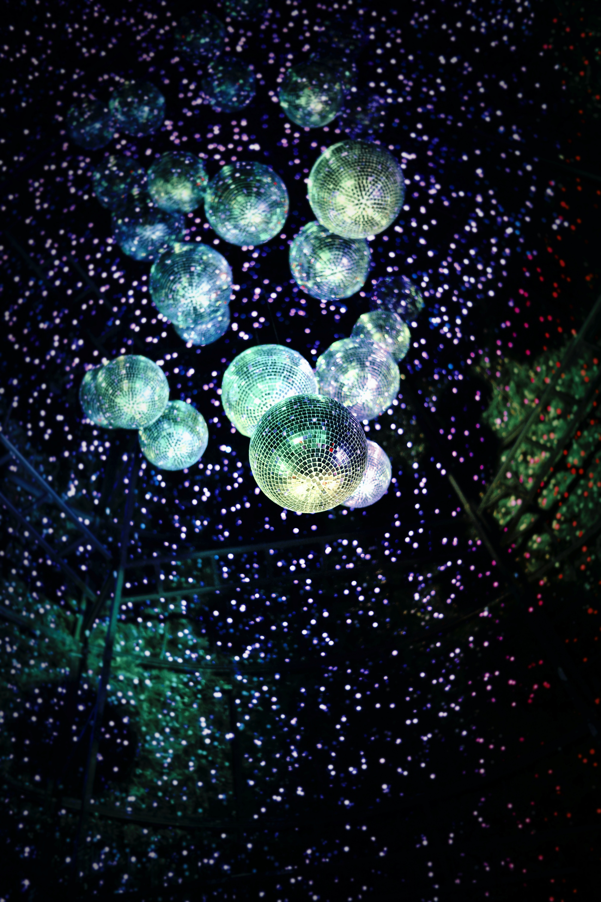
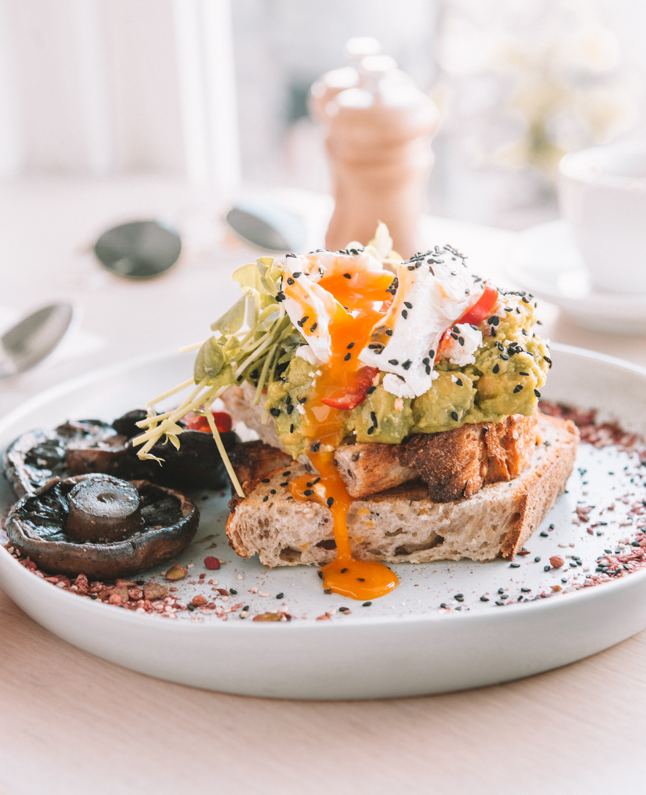
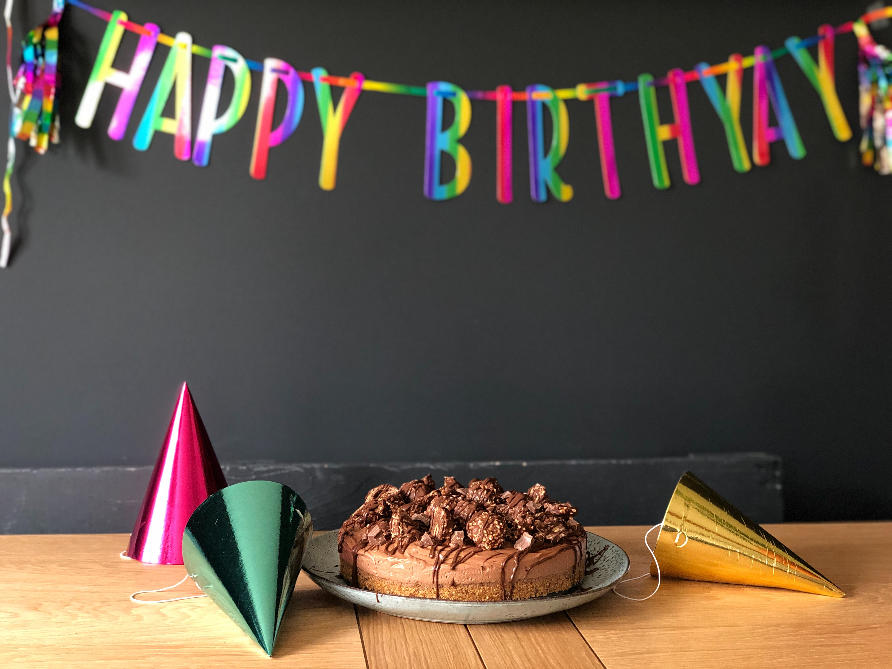

Adventures in DIY Lighting
By Pablo Neruda 4/9/2020
The last time you hosted a party, you forgot to add decorations to your shopping list and all you had on hand for your discriminating aunt’s 50th was a leftover Bob the Builder happy-birthday banner. Next time opt for these do-it-yourself lantern-like party lights. They put your holiday light strings to use year-round, can be assembled in minutes, and adapt to any occasion, whether the guests are dressed in diapers or draped in pearls... Read more

Everything Disco
By Milan Kundera 4/9/2020
The last time you hosted a party, you forgot to add decorations to your shopping list and all you had on hand for your discriminating aunt’s 50th was a leftover Bob the Builder happy-birthday banner... Read more

The Perfect Brunch
By Barbara Kingsolver 4/9/2020
The last time you hosted a party, you forgot to add decorations to your shopping list and all you had on hand for your discriminating aunt’s 50th was a leftover Bob the Builder happy-birthday banner. Next time opt for these do-it-yourself lantern-like party lights. They put your holiday light strings to use year-round, can be assembled in minutes, and adapt to any occasion, whether the guests are dressed in diapers or draped in pearls... Read more
Dress to Empress
By Assata Shakur 4/9/2020
The last time you hosted a party, you forgot to add decorations to your shopping list and all you had on hand for your discriminating aunt’s 50th was a leftover Bob the Builder happy-birthday banner. Next time opt for these do-it-yourself lantern-like party lights. They put your holiday light strings to use year-round, can be assembled in minutes, and adapt to any occasion, whether the guests are dressed in diapers or draped in pearls... Read more
Botanical Garden party
By Rebecca Solnit 4/9/2020
The last time you hosted a party, you forgot to add decorations to your shopping list and all you had on hand for your discriminating aunt’s 50th was a leftover Bob the Builder happy-birthday banner. Next time opt for these do-it-yourself lantern-like party lights. They put your holiday light strings to use year-round, can be assembled in minutes, and adapt to any occasion, whether the guests are dressed in diapers or draped in pearls... Read more

Bug Hunting with Kids
By Oliver Sachs 4/9/2020
The last time you hosted a party, you forgot to add decorations to your shopping list and all you had on hand for your discriminating aunt’s 50th was a leftover Bob the Builder happy-birthday banner. Next time opt for these do-it-yourself lantern-like party lights. They put your holiday light strings to use year-round, can be assembled in minutes, and adapt to any occasion, whether the guests are dressed in diapers or draped in pearls... Read more
Backyard Concerts
By Michael Crichton 4/9/2020
The last time you hosted a party, you forgot to add decorations to your shopping list and all you had on hand for your discriminating aunt’s 50th was a leftover Bob the Builder happy-birthday banner. Next time opt for these do-it-yourself lantern-like party lights. They put your holiday light strings to use year-round, can be assembled in minutes, and adapt to any occasion, whether the guests are dressed in diapers or draped in pearls... Read more

Spring's Best Arrangements
By Aimee Cesaire 4/9/2020
The last time you hosted a party, you forgot to add decorations to your shopping list and all you had on hand for your discriminating aunt’s 50th was a leftover Bob the Builder happy-birthday banner. Next time opt for these do-it-yourself lantern-like party lights. They put your holiday light strings to use year-round, can be assembled in minutes, and adapt to any occasion, whether the guests are dressed in diapers or draped in pearls... Read more
4th of July Celebration Ideas
By Antonin Artaud 4/9/2020
The last time you hosted a party, you forgot to add decorations to your shopping list and all you had on hand for your discriminating aunt’s 50th was a leftover Bob the Builder happy-birthday banner. Next time opt for these do-it-yourself lantern-like party lights. They put your holiday light strings to use year-round, can be assembled in minutes, and adapt to any occasion, whether the guests are dressed in diapers or draped in pearls... Read more

Best Birthday Gifts
By Anais Nin 4/9/2020
The last time you hosted a party, you forgot to add decorations to your shopping list and all you had on hand for your discriminating aunt’s 50th was a leftover Bob the Builder happy-birthday banner. Next time opt for these do-it-yourself lantern-like party lights. They put your holiday light strings to use year-round, can be assembled in minutes, and adapt to any occasion, whether the guests are dressed in diapers or draped in pearls... Read more
Best Backyard Games
By Jean Genet 4/9/2020
The last time you hosted a party, you forgot to add decorations to your shopping list and all you had on hand for your discriminating aunt’s 50th was a leftover Bob the Builder happy-birthday banner. Next time opt for these do-it-yourself lantern-like party lights. They put your holiday light strings to use year-round, can be assembled in minutes, and adapt to any occasion, whether the guests are dressed in diapers or draped in pearls... Read more
Top Wedding Locations
By Andre Breton 4/9/2020
The last time you hosted a party, you forgot to add decorations to your shopping list and all you had on hand for your discriminating aunt’s 50th was a leftover Bob the Builder happy-birthday banner. Next time opt for these do-it-yourself lantern-like party lights. They put your holiday light strings to use year-round, can be assembled in minutes, and adapt to any occasion, whether the guests are dressed in diapers or draped in pearls... Read more